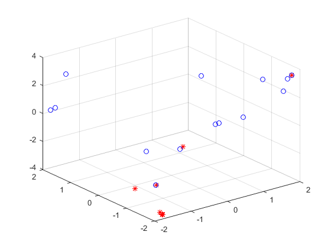

Contents
例4.1 通过遗传算法求解如下多元函数：
max f（x1，x2）=21.5+x1sin（4πx1）+x2sin（20πx2）
其中 -3<x1<12.1
4.1<x2<5.8clc
clear
close
clc
lbx=-2;
ubx=2;
lby=-2;
uby=2;
figure(1);
ezmesh('y*sin(2*pi*x)+x*cos(2*pi*y)',[lbx,ubx,lby,uby],50);

函数主体开始 准备阶段
NIND=40;
PRECI=50;
MAXGEN=20;
GGAP=0.95;
px=0.7;
pm=0.01;
trace=zeros(3,MAXGEN);
FieldD=[PRECI PRECI;lbx lby;ubx uby;1 1;0 0;1 1;1 1];
[Chrom,Lind,BaseV]=crtbp(NIND,PRECI*2);
优化阶段
gen=0;
XY=bs2rv(Chrom,FieldD);
X=XY(:,1);
Y=XY(:,2);
ObjV=Y.*sin(2*pi*X)+X.*cos(2*pi*Y);
while gen<MAXGEN
FitnV=ranking(ObjV);
SelCh=select('sus',Chrom,FitnV,GGAP);
SelCh=recombin('xovsp',SelCh,px);
SelCh=mut(SelCh,pm);
XY=bs2rv(SelCh,FieldD);
X=XY(:,1);
Y=XY(:,2);
ObjVSel=Y.*sin(2*pi*X)+X.*cos(2*pi*Y);
[Chrom,ObjV]=reins(Chrom,SelCh,1,1,ObjV,ObjVSel);
XY=bs2rv(Chrom,FieldD);
gen=gen+1;
[Y,I]=max(ObjV);
trace(1:2,gen)=XY(I,:);
trace(3,gen)=Y;
end
figure(2);
plot3(trace(1,:),trace(2,:),trace(3,:),'bo');
hold on;
grid on;
plot3(XY(:,1),XY(:,2),ObjV,'r*');
hold off;
figure(3)
plot(1:MAXGEN,trace(3,:));
grid on
xlabel('遗传代数：');
ylabel('界的变化：');
title('进化过程：');
bestZ=max(trace(3,:));
bestX=max(trace(1,:));
bestY=max(trace(2,:));
disp('最优解：X=');
disp(num2str(bestX));
disp('Y=');
disp(num2str(bestY));
disp('Z=');
disp(num2str(bestZ));
最优解：X=
1.7828
Y=
1.9905
Z=
3.7305
